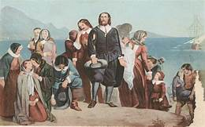
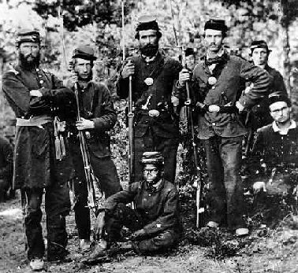

土著社会 Pre-Colonial and Native American Societies
土著人： 美国土著人来自亚洲。 大约 20000年前，阿拉斯加州 和西伯利亚中间被冰川覆盖了。 按理论来说， 西伯利亚的猎人穿过冰川到达啊拉斯加。随着天气变暖， 一条通往南方 的通道打开了。
这条通道使猎人能够进入美国。过了几千年后，猎人普及到 各地， 后来成为美国土著人。几千年后， 土著人部落出现了。 部落定居的地方影响了生活方式。住在西北太平洋沿岸的土著人猎杀海豹和海象。
西南土著人打猎和种植玉米为生活。
美国中间大平原上的土著人了猎杀水牛。 水牛供应肉，毛皮， 角和骨头 为工具， 和膀胱为荣器。
美国东北的土著人以打猎和钓鱼为生活。住在海边的人铺到各种海鲜。东南的土著人种植玉米，豆子，南瓜， 向日亏。 他们也觅食种子， 浆果，和 野生植物。 男生也猎杀卢， 兔子，鸟。
北美不足千万1的印第安人聚集程度较低,大 部分为游牧部落,以狩猎捕鱼为生。也有些部落是定居的,从事
农业生产。他们能够精耕细作,但基本上还处于石器时代,生产 水平低下,不知有耕犁,也不会制造车辆。他们主要穿兽皮,用 的是陶器,水上交通靠独木舟。但是美洲的农作物相当丰富,在我
们今天全世界的农作物中,有半数以上源自美洲,诸如玉蜀黍、西 红柿、土豆、烟草等。
北美印第安人在社会结构上是典型的古代氏族制度,刚从母系进入父系:最基本的单位是以亲属关系结成的氏族,然后由氏 族组成胞味再由胞组成部落,最后是部落联合而成的部落联
盟,部落人数一般不超过两于。在整个北美大陆上始终没有形成 民族和国家,基本上不存在政府和军队。由于一切财产属于氏族 或部落 *所以印第安人没有私有制的观念。部落内部也尚未“进
化”出阶级来,保持着原始的平等和民主。首领和酋长由成年男 女自由选举产生氏族具有罢免他们的权力,氏族议事会议决定 所有大事!”正因为他们的社会还没有形成上尊下卑的等级制,所
以印第安人一般都有极强的独立意识和自尊心,很难被驯服或奴 化。他们英勇善战,也保持着一些比较原始野蛮的习俗如剥头皮等。
虽然印第安各部落中存在着不同的语言,但是没有一种语言 形成了文字一切都通过口头和记忆相传。他们的宗教信仰可以 归为泛神论,主要是对自然的图腾崇拜。他们也行使巫术,举行
伴有大规模舞蹈的宗教仪式。
为什么印第安人的文明与世界其他民族相比处于这样一种比较原始的状态呢?这是个值得思考的问题。也许他们和大自然相处得实在太融洽了,因此完全不必去改变环境或者改变自己。如果欧洲人没有在15世纪进入美洲,印第安人又会如何发展呢?遗憾的是,这也是个永远不可解的谜了.

欧洲探索与殖民（1492-1763）European Exploration and Colonization
哥伦布 发现了北美洲之后 （1492年),
欧洲各各国家的国王沉思是否在北美，南美洲建值民地。在1500-1600年西班牙和葡萄牙在南美，北美建立殖民地。目的是扩张西班牙的领土，发现黄金，开大农场， 发张贸易， 和传播基督教。
欧洲个国家人民认为土著人没有文名。必须进行教育工做， 让本地土著人知道什嘛是文明国家。
France
法国在现在的加拿大发张贸易中心。1600-1700年法国探险家探险北美洲北, 中部。 发现了密西西比河流 和圣劳伦斯河。 跟北部各各部落发张合作的关系。
法国贸易商人使用制成品购买海里毛皮。土著人特别喜欢金属斧头，剪刀，布， 和锅碗和瓢盆。为了拥有这片领土， 英国和 法国打了一常战争。
England
英国在1600-1700年 沿北美大西洋的沿岸 建殖民地。目的是扩张国家的领土和发张贸易。 英国要使用北美的自然资源发张国家的势力和提高人民的生活水平. 第一个英国领土定居点。 在詹姆斯敦
（Jamestown）1607 年， 位于现在的 弗吉尼亚州。最初几年， 詹姆斯敦的定居民生活艰难。 在105人中，在第一年，只有35 人幸存下来。 后来， 生活条件改善了。
人民发现了烟草在詹姆斯敦 的附近生长良好.居民就赶快种植烟草。两，三年之后， 定居者开始向欧洲出口烟草，詹姆斯敦就蓬勃发展。第二批英国移民是因宗教信仰而受道迫害的人。他们叫做朝圣者。在
1534 年英国的国王成了国教。规定所有的英国人必须信。 但是一部分的人反对国王。说 我们不能接受国教的教义。所以， 我们不信。 后来， 这些人受到政府的迫害。他们决定移民到荷兰生活。
在荷兰的时候他们有工做。因为清教徒是外国人， 所以工资比较低， 但是工资够生活。清教徒 也有新教自由。 不过，问题也出现了。荷兰 和西班牙准备开战。战争可能影响他们的生计。此外， 他们看孩子，
孩子讲荷兰话比英文讲得好。父母怕孩子将来像荷兰人一样。

独立之路（1763-1783）The Road to Independence
大陆会议，1776年7月4日。 美利坚合众国十三个州一致通过的《独立宣言》。
随着世间事务的发展，当一个民族必须解除其和另一个民族之间的政治联系并取得自然法则和上帝所赋予 的、在举世列国中独立与平等的地位时，他们出於对人类舆论的尊重必须宣示驱使他们独立的原因。
我们认为下列真理不言而喻 : 人人生而平等，造物者赋予其若干不可剥夺的权利，包括生命权、自由权和 追求幸福的权利;世间政府是为保障这些权利而建的，政府的正当权力来自于被治理者的认可;当任何政
府形式危及这些目标时，人民就有权予以改变或废除并基于最有可能给他们带来安全与幸福的原则和权力 分配形式建立新政府。的确，从慎重考虑，不应当由于轻微和短暂的原因而改变成立多年的政府。过去的
一切经验也都说明，任何苦难，只要尚能忍受，人类都宁愿容忍，而无意废除他们久已习惯了的政府来恢 复自身的权益。但是，当政府一贯滥用职权、强取豪夺，一成不变地追逐这一目标，足以证明它旨在把人
民置于绝对专制统治之下时，那么，人民就有权利，也有义务推翻这个政府，并为他们未来的安全建立新 的保障
这就是这些殖民地过去逆来顺受的情况，也是它们现在不得不改变以前政府制度的原因。当今大不列颠国 王的历史，是一再损人利己和强取豪夺的历史，所有这些暴行的直接目的，就是想在这些邦建立一种绝对
的暴政。为了证明所言属实，现把下列事实公正地向世界宣布。
他拒绝批准对公众利益最有益、最必要的法律。
他禁止他的总督们批准急需和至关重要的法律，要不就把这些法律搁置起来暂等待他的同意;一旦这些法 律被搁置起来，他就完全置之不理。
他拒绝批准允许将广大地区供民众垦殖的其他法律，除非那些人民情愿放弃自己在立法机关中的代表权; 但这种权利对他们有无法估量的价值，只有暴君才畏惧这种权利。
他把各地立法机构召集到既不方便、也不舒适且远离公文档案保存地的地方去开会，其唯一的目的是使他 们疲于奔命，顺从他的意旨。
他一再解散各殖民地的议会，因为它们坚定果敢地反对他侵犯人民的各项权利。
在解散各殖民地议会後，他又长时间拒绝另选新议会。但立法权是无法被取消的，因此这项权力已经回到 广大人民手中并由他们来行使;其时各邦仍然险象环生，外有侵略之患，内有动乱之忧。
他竭力抑制各殖民地增加人囗，为此，他阻挠《外国人归化法律》的通过，拒绝批准其他鼓励外国人移居 各邦的法律，并提高分配新土地的条件。
他拒绝批准建立司法权力的法律，藉以阻挠司法公正。 他控制了法官的任期、薪金数额和支付，从而让法官完全从属于他个人的意志。 他建立多种新的衙门，派遣蝗虫般多的官员，骚扰我们人民，并蚕食民脂民膏。
在和平时期，未经我们立法机关的同意，他就在我们中间驻扎常备军。 他使军队独立于民政权力之外，并凌驾于民政权力之上。

早期共和国 (1783–1820s)The Early Republic

扩张与改革 (1820s–1850s) Expansion and Reform
西进运动
在美国历史上,关于西部的概念一直都在变化,最初它指的 很可能就是纽约和宾夕法尼亚的西部,后来指的也许是俄亥俄一 带,然后它不停地迅速西移,直到太平洋,现在说的西部主要是
指加州一带的西海岸了。从18世纪中叶开始到1890年美国人口 调查局宣称未开发的边疆地带已告结束,其间西进运动以汹涌澎 湃之势持续了将近一个半世纪,终于完成了从大洋到大洋的“显
然天命”。美国的版图向西扩展了两倍多,领土从83万平方英里 扩大到300万平方英里。从1783年到1860年,平均每三年就有 一个新成立的州加入联邦。对美国人来说,西部永远意味着新的
边疆、新的土地,新的自由和新的机会。
美国的西扩得益于新大陆存在着空旷的无人之区,印第安人 没有土地私有的概念,所以也就没有历史遗留下的明确国界。西 部人烟稀少的沃土永远是东部不可抗拒的诱惑,似乎任何力量也
阻挡不了他们的西进。对于像阿巴拉契亚山脉、密西西比河、落 基山这样的天然屏障,他们不辞辛苦地去跨越。对于其他欧洲殖
民势力,他们软硬兼施,或购买,或迫使其出让。在西进的全过程中,居然只需要和墨西哥一个国家以一国与国之间的战争来解决问题。这种美国式领土扩张的便捷是
四周都与邻国接壤的旧世界所难以想象的,但是也并非一帆风顺, 其中最大的挫折不是来自国外,而是由此引发的内战!

内战与重建 (1861–1877) The Civil War and Reconstruction
南北战争
1861年4月,林肯通知南方,联邦船只将运送给养给南卡罗 来纳州萨姆特堡的驻防军。12日,南方军队向萨姆特堡开火,迫 使联邦军投降,正式打响南北战争的第一枪。15日,林肯号召各
州派遣、75000名民兵,服役三个月。5月,他感到战争将会持久, 又招募45000名志愿兵。同时,他命令扩充陆海军,并封锁同盟的海岸线。
萨姆特堡开火后,其余蓄奴州必须迅速作出抉择,到底站在 哪一边。特拉华始终忠诚地维护联邦,弗吉尼亚、北卡罗来纳、阿 肯色和田纳西相继加入同盟。余下三个边界州肯塔基、密苏里和
马里兰对此举棋不定,内部也分为两派。林肯深知其中要害,采 用了包括军事管制在内的种种手段支持各州内的联邦派策略 地使它们保持中立,留在联邦内,这对战争的胜负起到了不可估 量的意义。
南方的目标是独立,所以战争一开始,南方主要是战略防御。 而北方却必须深入敌对的南方土地去镇压叛乱。北方的目标主要 有三:一是在东线攻占同盟的首都里士满,二是在西线控制密西
西比河,三是实行有效的海上封锁,迫使南方因物资匮乏而投降。 *在东线战场上,联邦军企图迅速攻下距离华盛顿只有100英 里的里士满。1861年7月,双方在均无充分准备的情况下,在布
尔伦河匆匆打了第一仗,联邦军的进攻被同盟军挫败。此后三年, 联邦军始终无进展,同盟军一次次把入境的联邦军打退,双方 都伤亡惨重。其间罗伯特•李还两次率领同盟军入侵北方,但都
被击败,一次是在马里兰境内的安提塔姆,发生在1862年9月, 一天内在同战场连打仗,联邦军伤亡1.3万,同盟军伤亡1.1 万。另一次是;1863年7月在宾夕法尼亚的盖底斯堡,这次同盟军
损失2.5万人,永远失去了进攻能力。联邦军的伤亡也不相上下, 当年11月,林肯在这里举行的纪念仪式上发表了著名的演说。
西线的战事较为顺利,尤利塞斯·辛·格兰特(1822- 1885将军于1862年初即攻占田纳西的西部,打通联邦军南下之 路,第二年2月联邦便得以在田纳西重建州政府。4月,双方在夏
伊洛打了北美大陆上有史以来第一个大战役,各伤亡一万多人,同 盟军阻止联邦军的企图失败。几周后,联邦军控制了新奥尔良。 1863年7月,格兰特又占领维克斯堡,从而完全控制了密西西比
河,将河西的阿肯色、路易斯安那、得克萨斯与河东的同盟切开, 这在空军还没有出现的时代具有极重大的意义。1864年,林肯任 命格兰特为联邦军的统帅,格兰特自己在东线对付李将军,让谢
尔曼接管线,对付约翰逊海上封锁以及海军对陆上作战的配合也相当重要。联邦封锁 了从南卡罗来纳到佛罗里达的全部海岸。使南方的棉花出口从2 亿美元降到400万美元。英国帮助同盟设计建造战舰,企图突破
封锁,它们也被用来攻击北方商船。同盟还打捞起北方撤退前凿 沉的“梅里麦克”号战船,将它装上铁甲于1862 年 3 月出战,击 毁了不少北方的木制战船。幸而联邦军造的一艘“蒙尼塔”号及
时赶到,与之对抗。联邦海军还在密西西比河上帮助摧毁同盟军, 打通河道。1864年又打了最后定局的几仗。谢尔曼于12月佐治亚的 亚特兰大进军萨凡纳,所过之处,留下一片焦土,同盟军溃不成
军。格兰特在东线和李的弗吉尼亚军队打了14个月后;终于在 1865年春攻下里士满。~4月9日,李将军在阿波马托克斯向格兰 特投降。不久,约翰逊也向谢尔曼投降,南北战争终于结束!
南北战争是美国历史上最大规模的战争 找死60万人,超 过美国后来在两次世界大战中死亡人数的总和,而当时美国的总 人口不过3000万。渗战人员的死亡率为四分之一强,其中有一个
原因是战术上的。当时军工业的发展使兵器的杀伤能力得到极大 提高,但指挥官们还是照用旧的战术,诸如在空地上大规模正面 出击等人海战术,一仗下来,往往死伤几万,惨不忍睹。一位北
方的参议员在看到战场的血腥场面后说,“如果战前我能看到这个 景象,我再想维护联邦,也会说:“代价实在太大了,误入歧途的 姐妹们,和平地走吧。””